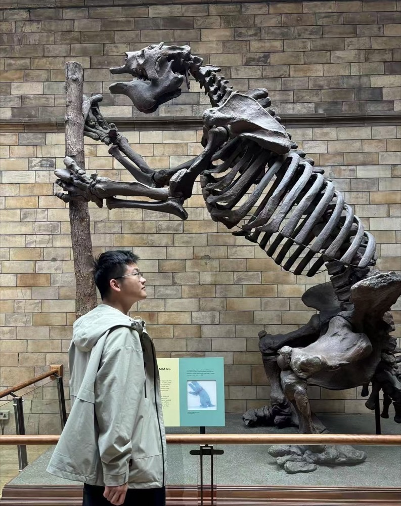

Sometimes that means building something. Sometimes it means testing an idea with physics, code, or a circuit. And sometimes it means inventing an entire world just to see what happens.
A lot of what I do begins with something small—a tent pole that gets in the way, a question about heat, a game I want to make, or an idea I can't stop thinking about. Somehow, I usually end up following it much farther than I expected.

Four directions
Different ideas call for different tools.
The things I spend time on can look unrelated. To me, they rarely feel that way.
Life Outdoors
Sometimes I build the answer.
A lot of my interest in making things started outdoors. The more time I spent camping, the more I noticed what could work differently—a pole in the wrong place, nowhere to put something I needed, or a shelter that could be simpler to use.
Sometimes I sketch another way to do it, build something, and take it outside to see if it actually works. Sometimes it does. Sometimes it doesn't. Then I usually want to know why.
A practical question about staying comfortable inside a lightweight tent led me into heat transfer, material properties, and a Python model.
I like the point where something I notice in the real world becomes a question I can test. Depending on the problem, I might end up using physics, code, a circuit, or some combination of them.
A friend showed me Scratch in elementary school. My mother bought me a book, and I started figuring it out on my own—finding websites, trying things, and making small games.
Making a game feels different from solving a programming problem. No one gives me the question. I have to decide what I want to make, invent the rules, and then figure out how to make it work.
That is one reason I keep coming back to science fiction.
A story lets me take a question about freedom, identity, technology, memory, or what makes a life meaningful, build a world around it, and see where it leads.
I don't usually find an answer by the end. Sometimes I just end up with a better question.
Some can be built. Some can be tested. Some can be coded. Some need a world of their own.
Outside the assignment
Not everything needs to become a project.
I like being outdoors. I make games because I want to play with an idea. I write stories even when no one is going to read them.
Not everything I enjoy needs a result. Some things are worth doing simply because I want to keep doing them.
I'm still figuring out where all of this will lead.
For now, I want to keep learning how things work, keep making things of my own, and keep finding time for ideas that don't have an obvious use—or an easy answer.